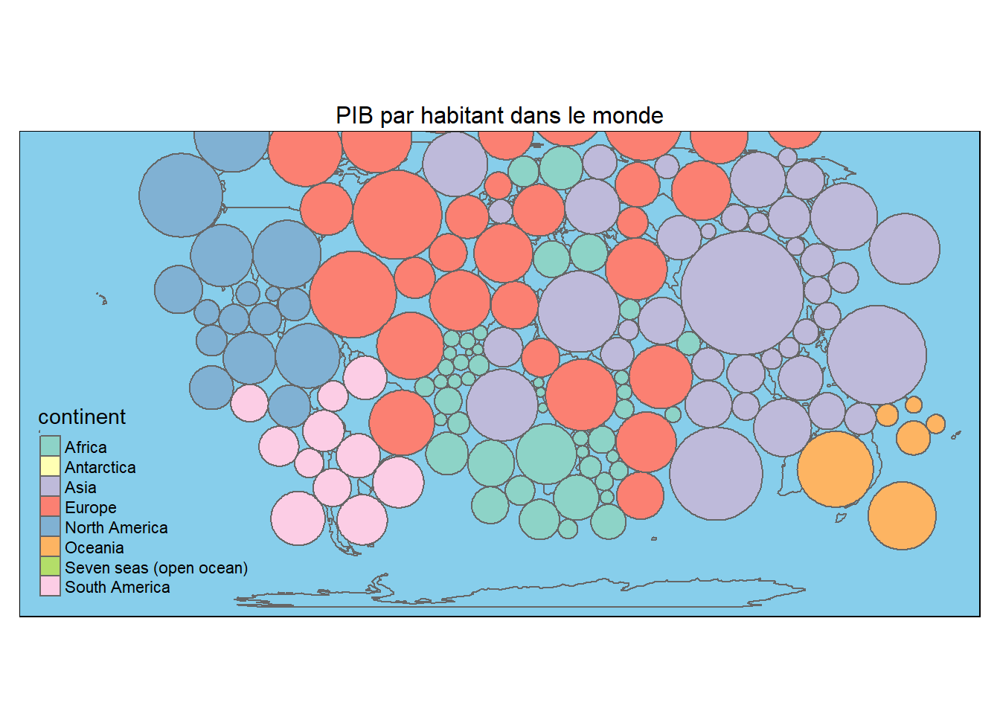

Chapitre 11 Créer des cartogrammes
Un cartogramme est une carte pour laquelle une variable continue, remplace la surface des territoires représentés. La géométrie de l’espace de la carte est déformée afin de se conformer aux informations relatives à cette variable.
Les fonctions du package cartogramm permettent de réaliser l’opération de déformation attendue. La sortie de ces fonctions est un spatial dataframe avec une nouvelle géométrie. On peut ensuite utiliser cette nouvelle géométrie pour la visualiser avec tout package de cartographie.
Dans ce chapitre nous allons utiliser les packages suivants.
library(cartogram)
library(tmap)
library(ggplot2)
#remotes::install_github("MaelTheuliere/variousdata")
library(variousdata)
data("World")11.1 Cartogramme d’aire contigue
Définition de la couche à partir de la variable d’une table. Ici en l’occurence le taux de mortalité de la mère à la naissance.
La fonction cartogram_cont() permet de définir la déformation attendue.
On peut ensuite utiliser le package que l’on souhaite pour cartographier cette couche.
- avec
tmap
mmr_cont %>%
tm_shape()+
tm_polygons("sh_sta_mmr",palette=viridis(5, alpha = 1, begin = 0.3, end = 1, direction = 1, option = "D"),
title="Taux de mortalité de la mère \n(pour 100 000 naissances)")+
tm_layout(main.title="Taux de mortalité de la mère \n(pour 100 000 naissances) dans le monde",
main.title.size=1.2,
bg.color = "skyblue",
legend.position=c("left","bottom"),
legend.outside = F,
main.title.position = "center",
frame = FALSE)- avec
ggplot2
mmr_cont %>%
ggplot() +
geom_sf(aes(fill = log(sh_sta_mmr)),color="white",size=.2)+
scale_fill_viridis_c(
option = "magma",
direction = 1,
breaks = c(0, 1, 2, 3, 4, 5, 6, 7))+
guides(
colour = F,
order = 0,
fill = guide_legend(
direction = "horizontal",
keyheight = unit(2, units = "mm"),
keywidth = unit(20, units = "mm"),
order = 1,
title.position = "top",
title.hjust = 0.5,
nrow = 1,
label.position = "bottom",
label.hjust = 1
)
) +
theme_minimal()+
theme(legend.position = "bottom",
panel.background = element_rect(fill = "light blue"))+
labs(fill = "Taux de mortalité infantile (échelle logarithmique)")11.2 Cartogramme d’aire non contigue
La fonction cartogram_ncont() permet de définir la déformation attendue.
On va ici réaliser le cartogramme sur le log de la mortalité des mères à la naissance.
mmr_ncont <- cartogram_ncont(sdg_indicators_sf %>%
filter(timeperiod == "2015",continent == "Africa") %>%
mutate(log_sh_sta_mmr = log(sh_sta_mmr)),
"log_sh_sta_mmr")tm_shape(World)+
tm_polygons()+
tm_shape(mmr_ncont, is.master = T)+
tm_polygons("log_sh_sta_mmr",palette=viridis(5, alpha = 1, begin = 0.3, end = 1, direction = 1, option = "D"),
title="Taux de mortalité de la mère \n(pour 100 000 naissances) en Afrique \néchelle logarithmique")+
tm_layout(main.title="Taux de mortalité de la mère \n en Afrique",
main.title.size=1,
bg.color = "skyblue",
legend.position=c("left","bottom"),
legend.outside = T,
main.title.position = "center",
frame = F)
11.3 Cartogramme de Dorling
Le cartogramme de Dorling est une représentation spatiale qui vise à remplaer les polygones par des cercles proportionnels à une variable données respectant au maximum la position spatiale des polygones.
La fonction cartogram_dorling() permet de définir la géométrie attendue.
On va ici réaliser un cartogramme de dorling sur le PIB par habitant en 2015.
gdp_dorling <- cartogram_dorling(sdg_indicators_sf %>%
filter(timeperiod == "2015",!is.na(gdp_per_cap)),"gdp_per_cap")tm_shape(World) +
tm_borders() +
tm_shape(gdp_dorling) +
tm_polygons("continent") +
tm_layout(frame = FALSE) +
tm_layout(main.title="PIB par habitant dans le monde",
main.title.size=1,
bg.color = "skyblue",
legend.position=c("left","bottom"),
legend.outside = F,
main.title.position = "center",
frame = T)